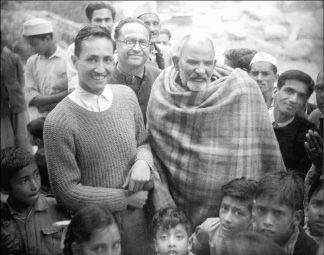
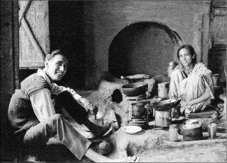
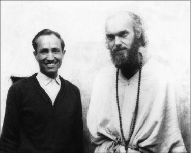

The Path of the Heart
Imagine feeling more love from someone than you have ever known. You’re being loved even more than your mother loved you when you were an infant, more than you were ever loved by your father, your child, or your most intimate lover—anyone. This lover doesn’t need anything from you, isn’t looking for personal gratification, and only wants your complete fulfillment.
You are loved just for being who you are, just for existing. You don’t have to do anything to earn it. Your shortcomings, your lack of self-esteem, physical perfection, or social and economic success—none of that matters. No one can take this love away from you, and it will always be here.
Imagine that being in this love is like relaxing endlessly into a warm bath that surrounds and supports your every movement, so that every thought and feeling is permeated by it. You feel as though you are dissolving into love.
This love is actually part of you; it is always flowing through you. It’s like the subatomic texture of the universe, the dark matter that connects everything. When you tune in to that flow, you will feel it in your own heart—not your physical heart or your emotional heart, but your spiritual heart, the place you point to in your chest when you say, “I am.”
This is your deeper heart, your intuitive heart. It is the place where the higher mind, pure awareness, the subtler emotions, and your soul identity all come together and you connect to the universe, where presence and love are.
Unconditional love really exists in each of us. It is part of our deep inner being. It is not so much an active emotion as a state of being. It’s not “I love you” for this or that reason, not I love you if you love me. It’s love for no reason, love without an object. It’s just sitting in love, a love that incorporates the chair and the room and permeates everything around. The thinking mind is extinguished in love.
If I go into the place in myself that is love and you go into the place in yourself that is love, we are together in love. Then you and I are truly in love, the state of being love. That’s the entrance to Oneness. That’s the space I entered when I met my guru.
Years ago in India I was sitting in the courtyard of the little temple in the Himalayan foothills. Thirty or forty of us were there around my guru, Maharaj-ji. This old man wrapped in a plaid blanket was sitting on a plank bed, and for a brief uncommon interval everyone had fallen silent. It was a meditative quiet, like an open field on a windless day or a deep clear lake without a ripple. I felt waves of love radiating toward me, washing over me like a gentle surf on a tropical shore, immersing me, rocking me, caressing my soul, infinitely accepting and open.
I was nearly overcome, on the verge of tears, so grateful and so full of joy it was hard to believe it was happening. I opened my eyes and looked around, and I could feel that everyone else around me was experiencing the same thing. I looked over at my guru. He was just sitting there, looking around, not doing anything. It was just his being, shining like the sun equally on everyone. It wasn’t directed at anyone in particular. For him it was nothing special, just his own nature.
This love is like sunshine, a natural force, a completion of what is, a bliss that permeates every particle of existence. In Sanskrit it’s called sat-cit-ananda, “truth-consciousness-bliss,” the bliss of consciousness of existence. That vibrational field of ananda love permeates everything; everything in that vibration is in love. It’s a different state of being beyond the mind. We were transported by Maharaj-ji’s love from one vibrational level to another, from the ego to the soul level. When Maharaj-ji brought me to my soul through that love, my mind just stopped working. Perhaps that’s why unconditional love is so hard to describe, and why the best descriptions come from mystic poets. Most of our descriptions are from the point of view of conditional love, from an interpersonal standpoint that just dissolves in that unconditioned place.
When Maharaj-ji was near me, I was bathed in that love. One of the other Westerners with Maharaj-ji, Larry Brilliant, said:
How do I explain who Maharaj-ji was and how he did what he did? I don’t have any explanation. Maybe it was his love of God. I can’t explain who he was. I can almost begin to understand how he loved everybody. I mean, that was his job, he was a saint. Saints are supposed to love everybody.
But that’s not what always staggered me, not that he loved everybody—but that when I was sitting in front of him I loved everybody. That was the hardest thing for me to understand, how he could so totally transform the spirit of people who were with him and bring out not just the best in us, but something that wasn’t even in us, that we didn’t know. I don’t think any of us were ever as good or as pure or as loving in our whole lives as we were when we were sitting in front of him.
Welcome to the path of the heart! Believe it or not, this can be your reality, to be loved unconditionally and to begin to become that love. This path of love doesn’t go anywhere. It just brings you more here, into the present moment, into the reality of who you already are. This path takes you out of your mind and into your heart.
Love is a natural human inclination. People in other times and places have found this path in many different cultural situations. In India it’s called bhakti yoga, finding ultimate union through love, a tradition that stretches back many centuries. Bhakti yoga practices are a way to enter into unconditional love, into the radiant heart, to dissolve oneself in the ocean of love, in the One. Later in the book you will meet a few of the Indian “saints” who have become that love. We will look at ways you can also tread on that path. There’s no formula. Each of us has our own key to unlock the reality of our heart.
Falling into Love
The first time you experience unconditional love as an adult, it may be a gentle melting of a glacier. Or it may be more of a cataclysm, like a giant earthquake that shakes you to your inner core. You are falling in love, but the act of receiving love that intense and all-encompassing changes your conception of yourself. You can’t swim in such a vast ocean and remain entirely in the small pond of your limited self. Even if that opening is only for an instant, even if it goes away and is apparently forgotten, that moment of realization, of the heart opening, colors the rest of a lifetime. There’s no going back. The lingering taste of that ultimate sweetness remains and won’t be denied.
Jesus used the metaphor of a fisherman. When you first feel that depth of joy, you are caught in the net of pure love by the divine fisherman; you’re hooked on that love.
My guru is like a fly fisherman. The ego twists and pulls and runs out the line trying to escape, but each time the hook of divine love sets more deeply until finally the little you, the personality and all its habits, the bundle of thoughts and desires, surrenders to the greater Self, that being of pure love and consciousness that keeps pulling you in to merge.
When I was first got to India, I abhorred the idea of gurus. I was attracted to Buddhism, which appealed to the psychologist in me. How did I end up sitting in front of a Hindu guru? When I first met him, I hardly knew what I was doing there myself.
But when Maharaj-ji immersed me in his unconditional love, it altered the course of my life. My view of myself completely changed. That meeting opened my heart. In that moment I opened up to the guru—not just to the old man in the blanket sitting in front of me, but to a place within him that reflected my true Self. That spiritual Self is the source of unconditional love.
When I returned to the States after that first time in India, I felt as though I was carrying a precious jewel in my heart and I wanted to share it. I could talk about my heart opening and the new awareness it had brought. But the guru—I didn’t really talk much about the guru, because the idea seemed so inappropriate for the West.
For one thing, there is always a mixed reaction to the notion of surrendering to another person. Surrendering in our culture is almost always seen as negative. We don’t like being told what to do; we like to figure it out for ourselves. Surrendering means giving up our power, and it usually has to do with ego power or sexual dominance.
The term “guru” evokes images of con men and hucksters rather than spiritual masters. Of course, we are right to be cynical when we see so-called gurus get entangled in money, sex, and power. Seductions, tax evasion, expensive cars, high-priced mantras—even Hollywood had its fun with gurus and cults (e.g., The Love Guru). The image of charismatic corrupters preying on weak-minded followers is hard to avoid. Most people wouldn’t know a real guru if they fell over him or her, and certainly few have ever met one.
At first Maharaj-ji seemed almost like a magical being to me. He had incredible spiritual powers, but slowly I began to appreciate that it was the ocean of his love that had truly hooked me. And that was the real thing. Here was a flesh-and-blood being who was living in a state of unconditional love all the time. That love allowed me to surrender, to accept his guidance on the inner journey to find that love in myself.
Later I encountered other beings, some living and some gone from the body, who helped me see more of the road map for this path of the heart. These beings come in all shapes, sizes, and manifestations, as we all do. They are signposts and guides to help us on the bhakti marg, the road to love, even though we each have to travel it ourselves. Some of the beings who have inspired me are the ones who have also inspired this book. I hope they will help you on your way too.
Unconditional love dissolves any rational hesitation as we become drunk on its sweetness. We are like moths circling a candle flame, immolating ourselves in a fire of living love.
Living Flame of Love
Oh, living flame of love,
how tenderly you penetrate
the deepest core of my being!
Finish what you began.
Tear the veil from this sweet encounter.
Oh, gentle fiery blade!
Oh, beautiful wound!
You soothe me with your blazing caress.
You pay off all my old debts,
and offer me a taste of the eternal.
In slaying me, you transform death into life.
Oh, flaming lantern!
You illuminate the darkest pockets of my soul.
Where once I wallowed in bitter separation
now, with exquisite intensity,
I radiate warmth and light to my Beloved.
How peacefully, how lovingly
you awaken my heart,
that secret place where you alone dwell within me!
Your breath on my face is delicious,
calming and galvanizing at once.
How delicately, how lucidly
you make me crazy with love for you!
—St. John of the Cross, translated by Mirabai Starr
Whatever your metaphor (and you can choose—and mix—your own), whether it’s succumbing to the softness of the ultimate romance, being submerged in a tidal wave of love, or being pulled into the gravitational field of a star, once you have experienced unconditional love, you have nowhere to go. You can run, but you can’t hide. The seed is planted, and it will grow in its own time. You can only grow into who you truly are.
You may think you’re free to come and go and play where you will, but the Beloved has taken you for his or her own, and in reality you can only surrender more and more to that divine attraction. Slowly but surely, in a moment or over thousands of lifetimes, the Beloved reels you in until you merge back into the unitary state of sat-cit-ananda, the truth-consciousness-bliss of the Self.
Family and Friends
The first day I met my guru, Maharaj-ji, a bond formed with him that changed my life irrevocably. A man from the nearby town of Nainital was translating the conversation into English for me. His name was Krishna Kumar, or “K.K.,” Sah. At the end of that encounter Maharaj-ji asked him to take me to his home. He told him to feed me “double roti,” or toast, presumably because I was a Westerner unfamiliar with Indian food.

K.K. first saw me as an uptight Western stranger and didn’t know what to make of me. Yet he had received an order from his guru and, out of deference reaching back to his childhood, he obeyed without question. Without hesitation he and his sister and brother absorbed me into the loving world of their family. They treated each other playfully as spiritual beings, not just as siblings, and they treated me as a family member. Four decades later we’re still in that relationship.
Overnight I was introduced to a world where miraculous beings, saints and gurus, are part of the warp and weft of everyday life. It was nothing overt or messianic. These people were just living their lives. What to them was their ordinary routine allowed me to assimilate a sea change in my outlook for which I had no previous reference points.
K.K. and his family had grown up with Maharaj-ji. In India traditional families carry on bhakti practices that suffuse every part of life. Love is the unspoken language. With multiple generations living in joint homes, that living transmission provides a bridge for pure love from infancy into childhood and over the hormonal roller coaster of adolescence into adulthood. A family guru or a spiritual elder gives younger generations glimpses of unbounded love. Maybe you’ve had a grandparent or someone like that in your family too.
K.K.’s sister, Bina, who like him remains unmarried, squatted in the kitchen over a wood fire making chapatis. I had just reached the point of stuffed satisfaction from one of her amazing meals when K.K. engaged me in conversation. As soon as I turned my head to talk to K.K., Bina whisked another chapati and a helping of subji (vegetables) onto my brass thali (plate). There was no chance to say, “Thanks” or “No thanks.” They had the routine down. I ate it all. In India it’s an insult if you don’t eat everything served to you, because food is so valuable. This happened a couple more times, and pleasure began to become pain. But K.K. and Bina were teasing me with such innocent delight I couldn’t help but enjoy it all, even the digestive discomfort.
K.K. is about my age, a few years younger. His connection to holy beings reaches back generations. Maharaj-ji first came to visit his home when he was a child. K.K.’s father, Bhawani Das Sah, was a Circle Inspector of Police for the Kumaon hill district of the British Raj. Part of his duty was to open and close the great temple at Badrinath high in the Himalayas at the beginning and end of the summer season and to keep track of police matters throughout the sprawling district. In the early twentieth century, motor roads were almost nonexistent in the hill area, and he traveled on horseback or on foot. He was a deeply spiritual man, and on his tours of duty K.K.’s father took the opportunity to visit the remote ashrams of many saints and yogis for whom the hill area is a traditional retreat.

He became a devotee of several great saints, known and unknown, and they came to his home when they passed through the town. Neem Karoli Baba—Maharaj-ji—was one of them. K.K. remembers it as an occasion for sweets and celebration. The first time Maharaj-ji came to the house, he asked where the bed was that another great saint, Hairakhan Baba, had slept on, and he lay down on it.
K.K.’s father died when K.K. was still quite young, and Maharaj-ji as the family guru became in many respects his father figure—but an unusual one! K.K. would skip school to hang out with Maharaj-ji on his rambles in the hills. His schoolteacher, a devotee, would mark him present as long as K.K. would in turn arrange for him to see Maharaj-ji. On an infrequent occasion when K.K. was actually in class, his teacher said, “You have been absent so much, now that you are present I am going to mark you absent!”
K.K. not only translated the language for me (his English was very good, working as he did as a clerk for the Municipal Board), but conveyed through his being the love flowing between him and Maharaj-ji, and from Maharaj-ji to me. Living with K.K., eating his sister Bina’s cooking from the wood fire, watching their daily puja, or worship, at the family altar, and feeling the love and respect they had for the saints gave me a cultural context for the changes I was going through. They reinforced the heart connection that Maharaj-ji had opened like a tunnel into the profound depth of my being. The way that K.K. honored and loved the saints gave me a framework for what was happening inside me.
Even so, that experience of the heart was at first too unfamiliar for me. In retrospect, forty years later, I see how I interpreted what occurred with Maharaj-ji through my mind. During our first encounter, he told me my thoughts about my mother from the previous night, which he could not possibly have known. It blew me away. Initially I focused on the fact that Maharaj-ji had read my mind. It took ten years before I began to realize that what had actually changed me was the opening of my heart.

At the time I was totally shaken up by that experience of his reading my mind. I looked down at the ground, thinking that if he could read that part of my mind, then the many shameful secrets I was enumerating to myself must be plain to him too. I hadn’t reckoned on the consequences of meeting someone who knew everything about me!
Filled with guilt, I finally looked up at Maharaj-ji. His face was only a few inches from mine, and as I looked into his eyes, he looked back at me with so much love, love that was unconditional, all-knowing, and completely accepting. It was like a shower or a bath of love that cleared away all the impurities I was carrying from the past.
Because I knew that he knew everything about me, I felt forgiven. He knew all of it, and he still loved me. It was so beautiful.
His love washed away all the guilt and shame I had been holding, feelings that were the unconscious props of my personality. With that one glance the house of cards of my ego collapsed, and suddenly for the first time in my adult life I saw myself as a pure soul.
For ten years after that, people asked me what it was in that meeting that had changed me, and all I could tell them was that he was a mind reader. It took a decade for me to realize that wasn’t it. The mind reading softened me up, no doubt, but it was the love that opened my heart.
Up Close Impersonal
When we talk about the heart, it’s easy to confuse the emotional heart and the spiritual heart, because, though they are both the heart, they represent different levels of consciousness. There’s the emotional heart we’re all familiar with, the one that romance and poetry are usually about (except mystic poetry). Emotional love encompasses all the dramatic feelings of attraction and hate and jealousy and sweetness and tenderness that make your heart throb, all these emotional states. It is laden with the hooks that continually create attachments and constantly affirm our egos.
Most emotions like fear, anger, lust, and envy are connected to our personality and the impulses from our conscious or unconscious mind, instincts for survival and procreation. Love is part of the emotional spectrum, but it is different because it emanates from our soul. Even when it becomes confused with our ego projections, love is actually from the higher essence of our being, the part that begins to merge with the spirit and approach the One.
Emotions come into being and are interpreted in our mind, arising and dissipating. If we’re angry, we feel anger in our mind. The emotion and the external stimulus or internal impulse that triggers it (usually some frustration that leads to anger) comes into the mind and stirs the thoughts like a gust of wind passing through.
Siddhi Ma is an amazing woman who holds Maharaj-ji’s ashrams together. She’s had a great affinity for saints since childhood. After she was widowed and her children grown, she’s lived continuously at Maharaj-ji’s ashrams. She said about anger, “Once the fire starts, it will burn itself out.” If you don’t catch it at the impulse stage, it will only dissipate after causing distress for you or others.
Emotions do seem to have a life of their own, whether they come from habitual patterning or spontaneous reactions. Emotions give you multileveled information about your environment. Sensations stimulate emotions as you interact with people and situations. It’s like a wave that lifts and carries you and sets you down again.
When we feel emotional love, we ride the wave, and when it recedes, we need love all over again. Our Western psyche is built on the need for emotional love. Our mind creates a whole reality around it. We think that’s the way it is, that everybody needs emotional love, and that if we don’t get it, we are deprived or insecure. Our minds tell us the more emotional love we get, the better off we are.
Our culture treats love almost entirely in connection with interpersonal relationships and interactions. Emotional love is based on external gratification, having our love reflected back to us. It’s not grounded in feeling love from inside. That’s why we keep needing more. When we love somebody emotionally, that need for feedback creates a powerful attachment. We get so caught up in the relationship that we rarely arrive at the essence of just dwelling in love.
Once I was deeply in love with a woman who broke up with me. I was in great emotional distress, but after some weeks I realized I was still in love. But I was no longer in love with her. She had left, we were permanently parted, and I had (unwillingly) come to terms with that. But I still felt love within me, I was carrying it around, and my heart was still wide open. I found I could be in love, with or without someone to receive it—a painful but deep realization that love is inside me, that love and the object of love aren’t necessarily the same thing.
Love is actually a state of being, and a divine state at that, the state to which we all yearn to return. The outer love object stimulates a feeling of love, but the love is inside us. We interpret it as coming from outside us, so we want to possess love, and we reach outside for something that is already inside us.
The equation changes when we understand love in a more universal way, as a way to get to the One. We can try to possess the key to our hearts, to our Beloved, but sooner or later we find that is impossible. To possess the key is to lose it. Paradoxically, we have to let go of emotional love to find the soul love that illuminates us from within.
There’s a story about the sixteenth-century poet-saint Tulsi Das, who wrote the vernacular Hindi Ramayana and many great devotional works. Tulsi Das was deeply in love with his wife. She said to him, “If you were half as attached to Lord R–am, to God, as you are to this impure body, you’d be liberated by now.” That woke him up.
Maharaj-ji showed me the possibility of transforming personal into impersonal love. I experienced the extraordinary magnitude of his love, but I saw he didn’t need anyone to love him back. At first I brought along all my old habits of emotional love. He became the object of my affections; I fell in love with him. From the first I could feel he loved me more than any other person who had ever loved me. It gave me a new dimension of love, something I had never felt before. And it persisted. It was love on another plane.
His presence was something I could only recognize from inside my soul. The deeper I went in my own being, the more fully I could feel his love, the more the spigot opened and the more the love flowed. No matter how deep I went, there was more love. Finally it was too much for my normal waking consciousness.
Gradually, I began to see how impersonal his love was. I realized it wasn’t directed at me, but I could bathe in it, and when I bathed in it, all my negative thoughts and feelings were nullified. I felt it in me, and I thought, “Wow, this is someplace I’ve never been before.” My neurotic ego had never allowed me to go there before.
The need for emotional gratification and the accompanying anxiety about losing it slowly fell away. Whenever I became afraid of losing it, I found I was still enveloped in more love than I’d ever felt. I would watch him mouthing, “R–am, R–am, R–am,” and feel a wave of love.
The more I gave up my desire for personal love, the less distance there was between his being and mine, and I felt much closer to him. Since he left his body, my love for him has not been limited to his form. We are sharing the same love. We can just be, in love.
If I go deeper in myself, the love is greater. It’s not just superficial. It didn’t go away when he died. I used to feel I could only get that love in India, but now all I have to do is plumb the depth of the moment. At first I used Maharaj-ji as the source of love, but slowly I became sure that the same love is in me. It is a constant joy.
Now he’s just here, laughing behind it all. And it’s still all love. Maharaj-ji’s teaching is just love. He’s not critical. The more open I am, the more I can receive the love. It’s the whole trip, the beginning, the middle, and the end.
Heart-Mind
For a moment let’s call the place from which soul love emanates the heart-mind. When Ramana Maharshi, one of the Indian saints you will meet, experienced the Self in the middle of his chest, it wasn’t his physical or emotional heart. It was his spiritual heart, in Sanskrit the hridayam, the seat of consciousness, what the Quakers call the “still, small voice of God.”
The heart-mind is not the ego. Our ego is a constantly changing bundle of thoughts about who we think we are. We build an edifice of thought forms and feelings that we identify with. It’s like a concept of self overlaid on a group of thoughts and emotions that we take as real. There’s nothing bad about having an ego. Those thoughts and feelings are necessary for a healthy personality. But if you identify so strongly with the ego that you think that’s all there is, that limited view can keep you from your deeper Self.
As a psychologist I was always dealing with that constellation of thought forms. My Western psychological self is based on the premise that I am my mind. It never opened a door to my heart-mind, not even through Freudian training and years of psychoanalysis.
I couldn’t get to my spiritual heart through my rational mind. My mind had to stop for my heart to open. Or as Patanjali, in the Yoga Sutras, the foundation of the system of yoga, puts it, “Yoga citta vritti nirodha,” or, roughly translated, “The union (yoga) arises when the waves of thoughts (vritti) in consciousness (citta) cease (nirodha).”
When at our first meeting Maharaj-ji recited to me the intimate thoughts I had been having about my mother, who had died six months before, it brought my mind tumbling down. I hadn’t voiced them to anyone. There was no way he could have known those things, and yet he knew my heart. The impossibility of his knowing my inmost thoughts and feelings, coupled with my primal love and grief for my mother, just ripped me open. I couldn’t think. He opened the door to my spiritual heart, to my heart-mind, through my love for my mother and his love for me. He loved me more than I had ever been loved before, though, as I have said, even after that heart opening for years I focused on the mind reading.
As I did spiritual practices, I began to witness my own mind from inside. I was aware of my eyes seeing, aware of feelings in my body. That witness consciousness is part of the heart-mind. The heart-mind is awareness turned inward, awareness of the spiritual universe within, and the quality of that awareness, the feeling that accompanies it, is love.
People instinctively identify with their awareness. When you ask people who they are, they point to their chest. That’s where that awareness resides, not in the thinking mind in the head. That’s the heart-mind. Cognitive psychology has never been able to find the mechanism of consciousness. Our awareness is individual in us, and it is also part of the larger awareness of God. It’s not different. We are fingers or tendrils of God consciousness.
In the West people treat awareness as a thought process rather than a heart-mind process. But our awareness actually comes from the heart-mind. Shifting our identification from the ego to the heart-mind is the beginning of individual spiritual work. That pure awareness is the territory of the soul. One way to understand spiritual work within an individual incarnation is to see it as a process of shifting from identifying with our ego to identifying with the soul or spiritual self. The quality of the soul is not just awareness, but also love and compassion, peace and wisdom.
In India they distinguish more clearly between levels of the mind. There are three levels from the thinking mind to the heart-mind. The thinking mind is manas. The intuitive intellect and the faculty of discrimination is buddhi. Individual awareness, the pure sense of I-ness, is ahamkara, which is the heart-mind and the witness. All of these levels of mind emanate from the individual soul, or jivatman, which is our connection to the all-pervading, universal soul, the –atman.
It may be helpful to see these planes as a series of veils or illusions (maya) that keep us separate from the –atman, or universal soul. In another sense they are a schematic of the conscious universe. The universal consciousness of the –atman is localized in the jivatman, our individual soul. Our most basic experience of selfhood is the individual awareness, the ahamkara. The higher mind, or buddhi, is the discriminating wisdom that mediates between pure awareness and the world of form. The everyday continuum of disparate thoughts and feelings that keeps us identified with sensory experience is the manas, the thinking mind. Of course, these are just labels.
When I first took psilocybin, I experienced the –atman and witnessed all the layers of my identity, of my incarnation. But I couldn’t maintain my identity with it; I couldn’t stay in it because of the power of my attachment to my thinking mind. I was still identified with myself as a psychologist. Coming down from those psychedelic trips was coming down into the thinking mind from a realm of direct experience of the Self that was unmediated by thought. When I got to India that experience allowed me to meet Maharaj-ji on his level in the –atman.
Home Is Where the Heart Is
During my initial experience with Maharaj-ji, I focused on two aspects of his being: that he knew everything and that he was loving me unconditionally. It took me a long time to put the two together in myself, to understand the depth of a being who could do that. I had to go from identifying in my head to identifying in my heart-mind.
I keep coming back to what Maharaj-ji did that first morning I was with him. It was not just mind reading. It was not only that he loved me unconditionally, although maybe it was that love that took me into the One. Now I think it was grace. That graceful love allowed the awareness and love to merge in the heart-mind, allowed the horizon of the sky of consciousness to open, allowed me to experience the One. Grace is at the nexus of love and awareness. There it’s all open and it’s all love. I could see everything as One, but to become One is grace. He gave me that grace to experience that for a moment. It was such a deep sense of being home. The One is awareness and love, but together they add up to more than the sum of their parts: home.
At the time this all happened in a rush of feelings and experiences, which, as you can tell, I am still integrating forty years later. But what allowed me to trust Maharaj-ji and enter into this path of the heart with him as a guide was the love. Within his love I felt so completely safe, I was able for a moment to let go of my fears and unworthiness and enter into my soul, my jivatman.
When I was with Maharaj-ji, I felt very loving toward the world. I realized that was created by his presence. He was a doorway to God. His consciousness was so playful with mine, it pulled me in, like the gravity of a larger body pulling in a smaller one. Our relationship is my journey within. Maharaj-ji is my inner Self.
Maharaj-ji instructed me to love everybody, and that has reverberated in me for years. Gradually, I’ve begun to be aware that I do love everything and everybody, not necessarily their personalities, but their essential being, because that is my essential being too. That’s soul perception, perceiving from the jivatman. When love comes together with awareness, the door is opened to the heart-mind and the soul. He brought that together for me. The heart-mind, the spiritual heart, is awareness and love.
My path is to continue to deepen that love for everyone and everything. That’s how I can serve Maharaj-ji and help others attune to their souls. And when I’m radiating the love and the joy that reside in my soul, that’s also what comes back to me. When I’m in touch with my soul, I live in an environment of the soul, which gives others the opportunity to enter their soul too.
If someone calls and you open a door and go out into the sun, you feel its warmth too. It’s not a concept. You can’t know it. You can only be it.
I Am Loving Awareness
I have a practice in which I say to myself, I am loving awareness. To begin, I focus my attention in the middle of my chest, on the heart-mind. I may take a few deep breaths into my diaphragm to help me identify with it. I breathe in love and breathe out love. I watch all of the thoughts that create the stuff of my mind, and I love everything, love everything I can be aware of. I just love, just love, just love.
I love you. No matter how rotten you are, I love you because you are part of the manifestation of God. In that heart-mind I’m not Richard Alpert, I’m not Ram Dass—those are both roles. I look at those roles from that deeper “I.” In the heart-mind I’m not identified with my roles. They’re like costumes or uniforms hanging in a closet. “I am a reader,” “I am a father,” “I am a yogi,” “I am a man,” “I am a driver”—those are all roles.
All I am is loving awareness. I am loving awareness. It means that wherever I look, anything that touches my awareness will be loved by me. That loving awareness is the most fundamental “I.” Loving awareness witnesses the incarnation from a plane of consciousness different from the plane that we live on as egos, though it completely contains and interpenetrates everyday experience.
When I wake up in the morning, I’m aware of the air, the fan on my ceiling, I’ve got to love them. I am loving awareness. But if I’m an ego, I’m judging everything as it relates to my own survival. The air might give me a cold that will turn into pneumonia. I’m always afraid of something in the world that I have to defend myself against. If I’m identified with my ego, the ego is frightened silly, because the ego knows that it’s going to end at death. But if I merge with love, there’s nothing to be afraid of. Love neutralizes fear.
Awareness and love, loving awareness, is the soul. This practice of I am loving awareness turns you inward toward the soul. If you dive deep enough into your soul, you will come to God. In Greek it’s called agape, God love. Martin Luther King, Jr., said about this agape, this higher love: “It’s an overflowing love which is purely spontaneous, unmotivated, groundless and creative . . . the love of God operating in the human heart.”
It’s the love Maharaj-ji spreads around, the unconditional love. He loves you just because, just because. Spontaneous, unmotivated, groundless. He’s not going to love you because you’re an achiever or a devotee or a yogi, or because you’re on the path. He loves you just because. Can you accept it? Can you accept unconditional love?
When you can accept that kind of love, you can give that love. You can give love to all you perceive, all the time. I am loving awareness. You can be aware of your eyes seeing, your ears hearing, your skin feeling, and your mind producing thoughts, thought after thought after thought. Thoughts are terribly seductive, but you don’t have to identify with them. You identify not with the thoughts, but with the awareness of the thoughts. To bring loving awareness to everything you turn your awareness to is to be love. This moment is love. I am loving awareness.
If you put out love, then you immerse yourself in the sea of love. You don’t put out love in order to get back love. It’s not a transaction. You just become a beacon of love for those around you. That’s what Maharaj-ji is. Then from the moment you wake until the moment you go to sleep, and maybe in dreams too, you’re in a loving environment.
Try using I am loving awareness to become aware of your thought forms and to practice not identifying with them. Then you can identify with your soul, not your fears and anxieties. Once you identify with your spiritual being, you can’t help but be love.
It’s simple. I start with the fact that I’m aware, and then I love everything. But that’s all in the mind, that’s a thought, and loving awareness is not a thought. Or if it’s a thought, it’s pointing to a place that’s not a thought. It’s pointing at a state of being the way the concept of emptiness is pointing at emptiness, which is really fullness.
Souls love. That’s what souls do. Egos don’t, but souls do. Become a soul, look around, and you’ll be amazed—all the beings around you are souls. Be one, see one.
When many people have this heart connection, then we will know that we are all one, we human beings all over the planet. We will be one. One love.
And don’t leave out the animals, and trees, and clouds, and galaxies—it’s all one. It’s one energy. It comes through in individual ways, but it’s one energy. You can call it energy, or you can call it love. I like to look at a tree and see that it’s love. Don’t you?
Deny the reality of things
and you miss their reality;
Assert the emptiness of things
and you miss their reality.
The more you talk and think about it,
the further you wander from the truth.
So cease attachment to talking and thinking,
and there is nothing you will not be able to know.
To return to the root is to find the essence,
but to pursue appearances or “enlightenment” is to miss the Source.
To awaken even for a moment
is to go beyond appearance and emptiness.